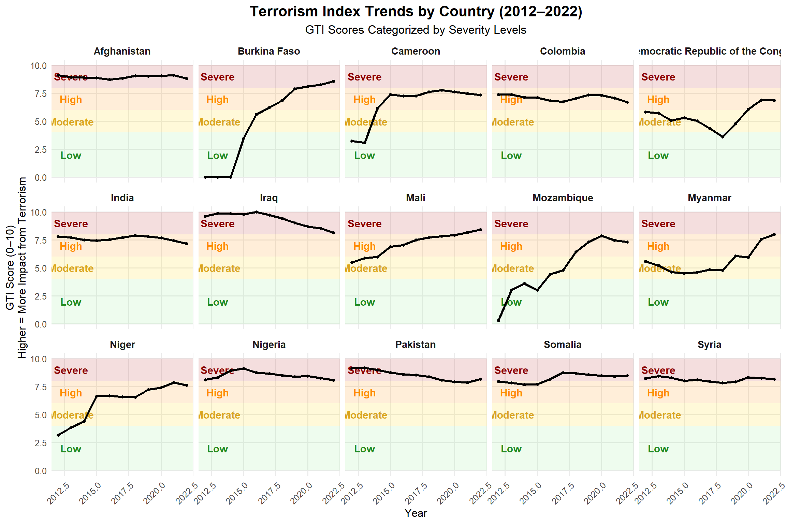

The original chart visualizing the Global Terrorism Index lacked clarity in terms of trends and country comparisons across time. Our objective is to improve interpretability while preserving the integrity of the data.
Original Visualization
Original GTI Chart
Critical Evaluation of Original Visualization
What Works Well ✅
Clear Title and Subtitle: “The World’s Terrorism Hotspots” effectively communicates purpose; subtitle explains GTI basis
Effective Chart Type: Bar chart efficiently compares values across countries
Appropriate Color Theme: Consistent deep red reinforces severity theme suitable for the topic
Enhanced Country Identification: Flags help users quickly identify nations without reading all names
Precise Data Display: Numeric scores clearly labeled on each bar for accurate comparison
Proper Attribution: Correctly cites “Institute for Economics and Peace” with methodology explanation
What Could Be Improved ❌
Missing Geographic Context: No map or regional grouping to show concentration in Africa/Middle East
Limited Color Accessibility: Dark maroon with white text may reduce legibility for some viewers
Lack of Interactivity: Static image prevents exploration of additional data dimensions
Absent Temporal Context: No visualization of trends over time despite 5-year data availability
Unclear Score Interpretation: Lacks scale context to help viewers understand meaning of scores
Our Improved Visualizations
Data Preparation and Processing
We used the Global Terrorism Index 2023.xlsx file from the Institute for Economics and Peace. The Overall Scores sheet was selected due to its completeness and structured format.
Code
library(readxl)library(dplyr)library(tidyr)library(ggplot2)# Load the datadf <-read_excel("data/Global Terrorism Index 2023.xlsx", sheet ="Overall Scores")
Transforming Data for Analysis
We reshape the data frame containing country scores by year into a long format, making each row represent a country-year-score combination. This transformation enables more effective analysis of trends over time for each country.
We then identify the top 15 countries based on their 2022 scores to focus our visualization on the most affected regions.
Code
# Convert to long formatlong_df <- df %>%pivot_longer(cols =matches("^[0-9]{4} Score$"), names_to ="Year", values_to ="Score") %>%mutate(Year =as.integer(gsub(" Score", "", Year)))# Filter top 15 countries based on latest scoretop15 <- df %>%select(Country, `2022 Score`) %>%arrange(desc(`2022 Score`)) %>%slice(1:15) %>%pull(Country)filtered_df <- long_df %>%filter(Country %in% top15)
Visualization
Trend Analysis with Severity Classification
This visualization addresses the original chart’s lack of temporal context by showing how terrorism impacts have changed over a decade (2012-2022). We’ve added color-coded severity bands to provide clear context for score interpretation.
Code
library(ggplot2)library(dplyr)ggplot(filtered_df, aes(x = Year, y = Score)) +# Severity background bands (more visible)annotate("rect", xmin =-Inf, xmax =Inf, ymin =8, ymax =10,fill ="#B22222", alpha =0.15) +annotate("rect", xmin =-Inf, xmax =Inf, ymin =6, ymax =8,fill ="#FF8C00", alpha =0.15) +annotate("rect", xmin =-Inf, xmax =Inf, ymin =4, ymax =6,fill ="#FFD700", alpha =0.15) +annotate("rect", xmin =-Inf, xmax =Inf, ymin =0, ymax =4,fill ="#90EE90", alpha =0.15) +# Add labels to indicate severity zonesannotate("text", x =2013, y =9, label ="Severe", color ="#8B0000", size =4, fontface ="bold") +annotate("text", x =2013, y =7, label ="High", color ="#FF8C00", size =4, fontface ="bold") +annotate("text", x =2013, y =5, label ="Moderate", color ="#DAA520", size =4, fontface ="bold") +annotate("text", x =2013, y =2, label ="Low", color ="#228B22", size =4, fontface ="bold") +# Main line chartgeom_line(color ="#000000", linewidth =1.2) +geom_point(color ="#000000", size =1.2) +# Faceted by countryfacet_wrap(~Country, ncol =5) +theme_minimal(base_size =12) +labs(title ="Terrorism Index Trends by Country (2012–2022)",subtitle ="GTI Scores Categorized by Severity Levels",x ="Year",y ="GTI Score (0–10)\nHigher = More Impact from Terrorism" ) +theme(plot.title =element_text(size =16, face ="bold", hjust =0.5),plot.subtitle =element_text(size =13, hjust =0.5),strip.text =element_text(size =11, face ="bold"),axis.text.x =element_text(angle =45, hjust =1),panel.grid.minor =element_blank() )

Terrorism Index Trends by Country (2012–2022), with Severity Levels
Key Insights from Trend Analysis:
Afghanistan, Iraq, and Syria show consistently high terrorism impacts over the decade
Several countries show declining trends (Iraq, Nigeria) while others show recent increases (Burkina Faso)
The color-coded severity bands provide immediate context for interpreting the GTI scores
Conclusion and Impact
Our improved visualizations address the key shortcomings of the original chart:
Added Temporal Context: We now show trends over 10 years instead of a static snapshot
Improved Score Interpretation: Color-coded severity bands make it easier to understand what the scores mean
Enhanced Visual Neutrality: Removed potentially biased imagery while maintaining clarity
Better Accessibility: Improved color contrasts and clear labeling
These improvements enhance understanding of global terrorism patterns by providing temporal context, facilitating more informed analysis and decision-making.
References
Institute for Economics and Peace. (2023). Global Terrorism Index 2023: Measuring the Impact of Terrorism.
Friendly, M. (2008). The Golden Age of Statistical Graphics. Statistical Science, 23(4), 502-535.
Few, S. (2009). Now You See It: Simple Visualization Techniques for Quantitative Analysis. Analytics Press.
Source Code
---title: "Improving the Global Terrorism Index Visualization"author: "Coral Team"format: html: theme: cosmo toc: true toc-depth: 3 toc-title: "Contents" code-fold: true code-tools: true fig-width: 12 fig-height: 8 highlight-style: githubeditor: visual---```{=html}<style>h1, h2, h3, h4 { color: #2c3e50;}.section-divider { border-top: 1px solid #e0e0e0; margin: 2em 0;}.highlight-box { border-left: 5px solid #f0ad4e; background-color: #fcf8e3; padding: 1em; margin: 1em 0;}.insight-box { border-left: 5px solid #5bc0de; background-color: #f0f7fd; padding: 1em; margin: 1em 0;}</style>```# Introduction {.section-header}The original chart visualizing the Global Terrorism Index lacked clarity in terms of trends and country comparisons across time. Our objective is to improve interpretability while preserving the integrity of the data.<div class="section-divider"></div># Original Visualization {.section-header}{width=80% fig-align="center"}## Critical Evaluation of Original Visualization#### What Works Well ✅- **Clear Title and Subtitle:** "The World's Terrorism Hotspots" effectively communicates purpose; subtitle explains GTI basis- **Effective Chart Type:** Bar chart efficiently compares values across countries- **Appropriate Color Theme:** Consistent deep red reinforces severity theme suitable for the topic- **Enhanced Country Identification:** Flags help users quickly identify nations without reading all names- **Precise Data Display:** Numeric scores clearly labeled on each bar for accurate comparison- **Proper Attribution:** Correctly cites "Institute for Economics and Peace" with methodology explanation#### What Could Be Improved ❌- **Missing Geographic Context:** No map or regional grouping to show concentration in Africa/Middle East- **Limited Color Accessibility:** Dark maroon with white text may reduce legibility for some viewers- **Lack of Interactivity:** Static image prevents exploration of additional data dimensions- **Potential Visual Bias:** Background imagery (dove in crosshair) potentially adds emotional bias- **Absent Temporal Context:** No visualization of trends over time despite 5-year data availability- **Unclear Score Interpretation:** Lacks scale context to help viewers understand meaning of scores------------------------------------------------------------------------# Our Improved Visualizations {.section-header}## Data Preparation and Processing<div class="highlight-box"> We used the *Global Terrorism Index 2023.xlsx* file from the Institute for Economics and Peace. The `Overall Scores` sheet was selected due to its completeness and structured format. </div>```{r}#| label: load-libraries#| message: false#| warning: falselibrary(readxl)library(dplyr)library(tidyr)library(ggplot2)# Load the datadf <-read_excel("data/Global Terrorism Index 2023.xlsx", sheet ="Overall Scores")```------------------------------------------------------------------------#### Transforming Data for Analysis<div class="highlight-box"> We reshape the data frame containing country scores by year into a long format, making each row represent a country-year-score combination. This transformation enables more effective analysis of trends over time for each country.We then identify the top 15 countries based on their 2022 scores to focus our visualization on the most affected regions.</div>```{r}#| label: data-transformation#| message: false# Convert to long formatlong_df <- df %>%pivot_longer(cols =matches("^[0-9]{4} Score$"), names_to ="Year", values_to ="Score") %>%mutate(Year =as.integer(gsub(" Score", "", Year)))# Filter top 15 countries based on latest scoretop15 <- df %>%select(Country, `2022 Score`) %>%arrange(desc(`2022 Score`)) %>%slice(1:15) %>%pull(Country)filtered_df <- long_df %>%filter(Country %in% top15)```------------------------------------------------------------------------## Visualization #### Trend Analysis with Severity Classification<div class="highlight-box"> This visualization addresses the original chart's lack of temporal context by showing how terrorism impacts have changed over a decade (2012-2022). We've added color-coded severity bands to provide clear context for score interpretation. </div>```{r}#| label: trend-visualization#| fig-cap: "Terrorism Index Trends by Country (2012–2022), with Severity Levels"#| fig-width: 12#| fig-height: 8#| warning: false#| message: falselibrary(ggplot2)library(dplyr)ggplot(filtered_df, aes(x = Year, y = Score)) +# Severity background bands (more visible)annotate("rect", xmin =-Inf, xmax =Inf, ymin =8, ymax =10,fill ="#B22222", alpha =0.15) +annotate("rect", xmin =-Inf, xmax =Inf, ymin =6, ymax =8,fill ="#FF8C00", alpha =0.15) +annotate("rect", xmin =-Inf, xmax =Inf, ymin =4, ymax =6,fill ="#FFD700", alpha =0.15) +annotate("rect", xmin =-Inf, xmax =Inf, ymin =0, ymax =4,fill ="#90EE90", alpha =0.15) +# Add labels to indicate severity zonesannotate("text", x =2013, y =9, label ="Severe", color ="#8B0000", size =4, fontface ="bold") +annotate("text", x =2013, y =7, label ="High", color ="#FF8C00", size =4, fontface ="bold") +annotate("text", x =2013, y =5, label ="Moderate", color ="#DAA520", size =4, fontface ="bold") +annotate("text", x =2013, y =2, label ="Low", color ="#228B22", size =4, fontface ="bold") +# Main line chartgeom_line(color ="#000000", linewidth =1.2) +geom_point(color ="#000000", size =1.2) +# Faceted by countryfacet_wrap(~Country, ncol =5) +theme_minimal(base_size =12) +labs(title ="Terrorism Index Trends by Country (2012–2022)",subtitle ="GTI Scores Categorized by Severity Levels",x ="Year",y ="GTI Score (0–10)\nHigher = More Impact from Terrorism" ) +theme(plot.title =element_text(size =16, face ="bold", hjust =0.5),plot.subtitle =element_text(size =13, hjust =0.5),strip.text =element_text(size =11, face ="bold"),axis.text.x =element_text(angle =45, hjust =1),panel.grid.minor =element_blank() )```------------------------------------------------------------------------#### Key Insights from Trend Analysis:- Afghanistan, Iraq, and Syria show consistently high terrorism impacts over the decade- Several countries show declining trends (Iraq, Nigeria) while others show recent increases (Burkina Faso)- The color-coded severity bands provide immediate context for interpreting the GTI scores------------------------------------------------------------------------# Conclusion and Impact {.section-header}Our improved visualizations address the key shortcomings of the original chart:1. Added Temporal Context: We now show trends over 10 years instead of a static snapshot2. Improved Score Interpretation: Color-coded severity bands make it easier to understand what the scores mean3. Enhanced Visual Neutrality: Removed potentially biased imagery while maintaining clarity4. Better Accessibility: Improved color contrasts and clear labelingThese improvements enhance understanding of global terrorism patterns by providing temporal context, facilitating more informed analysis and decision-making.------------------------------------------------------------------------# References {.section-header}- Institute for Economics and Peace. (2023). Global Terrorism Index 2023: Measuring the Impact of Terrorism.- Friendly, M. (2008). The Golden Age of Statistical Graphics. Statistical Science, 23(4), 502-535.- Few, S. (2009). Now You See It: Simple Visualization Techniques for Quantitative Analysis. Analytics Press.